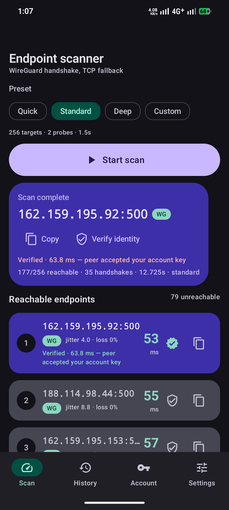
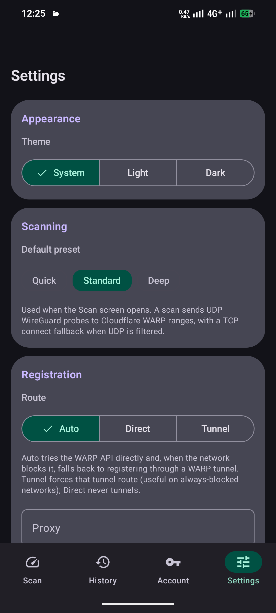
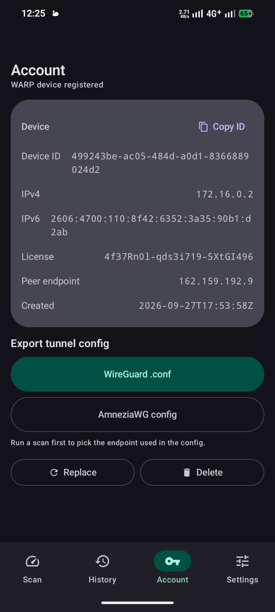

Real WireGuard handshake scanning, three-layer blocked-network registration, and one-tap config export. Built natively with Go core and gomobile for zero overhead.

Engineered with a compiled Go core via gomobile. Delivers low-level socket control and full WireGuard handshake capability without requiring root privileges.
True tunnel RTT, jitter, and packet loss measurement. Includes automatic TCP fallback when UDP traffic is filtered. Handshake-confirmed results always rank first.
Executes a real WireGuard authentication session to prove the target edge node accepts your cryptographic keypair before you finalize any configuration export.
Cryptographic keys are generated strictly on your physical device and sealed within Android Keystore. Only your public key ever transmits over the wire.
Three defensive fallback layers ensure success even when Cloudflare API endpoints are throttled or actively spoofed by restrictive firewalls.
Generate clean .conf files complete with Jc, Jmin, Jmax, S1, and S2 packet obfuscation parameters explicitly tuned for restrictive DPI environments.
Keeps track of your last 30 scan sweeps stored securely in local SQLite. Designed according to strict Material 3 standards with dynamic theme fidelity.
State-sponsored firewalls routinely block api.cloudflareclient.com by inspecting SNI or dropping known endpoints. JunkVPN uses an engineered three-layer fallback stack to establish device registration.
Direct query to alternate Cloudflare IPv4/IPv6 anycast ranges using encrypted DNS-over-HTTPS queries to bypass local DNS poisoners.
Optionally route registration through a local SOCKS5 or HTTP proxy — including ports exposed by other VPN apps. The proxy carries only the registration call and is released right after the token exchange.
Endpoint sweep establishes an in-process WireGuard session without touching VpnService, then registers your device directly through that ephemeral tunnel.

Settings → Registration → Route

Account → registered WARP device, one-tap export
Full workflow implementation: authenticated POST /reg followed by a warp_enabled patch. The device card delivers an instant view of your assigned IP blocks and cryptographic license keys.
Target endpoint automatically binds to your newly minted credentials. No manual IP copy-pasting or file editing required.
Rotate device identities in one tap. Revoke tokens and unbind safely from Cloudflare servers without leaving stale traces.
From raw network probes to importable profiles in three simple automated steps.
Choose Quick (64 targets), Standard (256), Deep (1024), or your own custom targets. Measures handshake latency, jitter variance, and packet loss.
Automatic route fallbacks overcome restrictive firewalls to register your public key and complete an authenticated WireGuard handshake confirmation.
Generate and copy ready-to-import configuration files targeting your top-ranked endpoint with WireGuard or AmneziaWG obfuscation support.
JunkVPN operates under the strictest cryptographic boundaries. There is no middleman backend.
No Firebase, Sentry, Mixpanel, or third-party analytics SDKs are compiled into the binary.
Scanned endpoints and latency logs stay in the local database; your private key never leaves the Android Keystore.
When configured, SOCKS5 or HTTP proxies handle only the initial token registration call and are closed immediately.
In-process WireGuard session uses temporary credentials and terminates as soon as registration finishes.
Encrypted DNS lookups are strictly constrained to Cloudflare hostnames; system resolver remains untouched.
Handshake probes target verified Cloudflare Edge ranges exclusively. Zero external telemetry beacons.
Disclaimer: Not affiliated with, endorsed by, or connected to Cloudflare, Inc. WARP is a product of Cloudflare, Inc.
Built from source with a Go core and Kotlin UI, signed with the project release key. SHA-256 checksums published alongside every GitHub release tag.
Android 8.0+ (API 26) · Sideload via adb or build from source with Android Studio